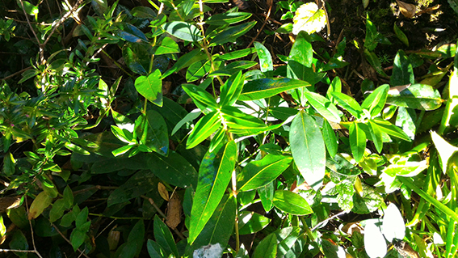

O Hipericão é uma planta do género botânico da família Hypericaceae, espécie endémica das ilhas Canárias com a denominação: Hypericum canariense.
Trata-se de uma espécie endémica das Ilhas Canárias, característica das comunidades de substituição da floresta da Laurissilva do Barbusano. Na ilha da Madeira surge principalmente na face sul da ilha.
Apresenta-se como um arbusto caducifólio com até 4 metros de altura e com folhas sésseis, elípticas a oblongo-elípticas, de 2,5 a 7 centímetros de comprimento e caducas no Verão. As flores desta planta são amarelas e reunidas em inflorescências terminais.
Depois de esmagadas, as folhas libertam um cheiro forte e característico. Utiliza-se toda a parte aérea em infusão. Muito usado em doenças do fígado, cólicas e cistites. É um excelente diurético. Também pode ser utilizado externamente em queimaduras e contusões. Não tem contraindicações nem efeitos secundários conhecidos. A infusão pode ser tomada 2 a 3 vezes por dia.
O chá de hipericão é utilizado para reduzir a ansiedade e stress.
Pode ainda ser utilizado em emplastros para reumatismo e dores musculares.
A floração desta planta dá-se entre maio e setembro e apresenta inúmeras flores amarelas, que evoluem em frutos que podem apresentar várias cores distintas ao longo do processo de maturação. As sementes estão prontas a colher em Setembro.
Prefere solos ácidos, húmidos, bem drenados, ricos em matéria orgânica e gosta de estar em locais sombrios, embora se adapte a uma boa exposição solar. Apresenta excelentes características como ornamental, sendo atualmente muito utilizada em vários países, em taludes, zonas sombrias e húmidas, junto a cursos de água, e em composição de maciços silvestres, juntamente com outras plantas, em associações vegetais. Pode ser cultivada em vasos e floreiras.